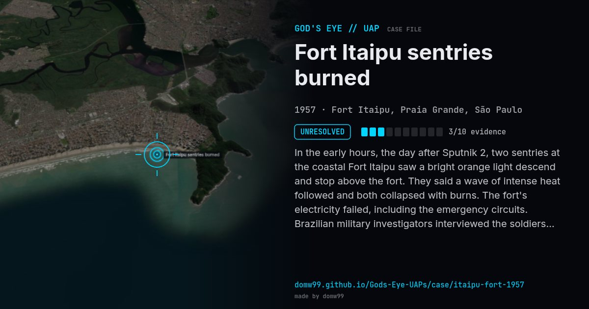

Fort Itaipu sentries burned
UNRESOLVED

In the early hours, the day after Sputnik 2, two sentries at the coastal Fort Itaipu saw a bright orange light descend and stop above the fort. They said a wave of intense heat followed and both collapsed with burns. The fort's electricity failed, including the emergency circuits. Brazilian military investigators interviewed the soldiers, and American officials were reported to have joined them.
What was seen
Shape: Bright orange light descending from the sky
Witnesses: 2 sentries; garrison woken by the power failure
Duration: About 3 minutes
Sources
Browse
- Brazil
- 1950s
- Unresolved
- Military encounters
- Military witnesses
- Reported electromagnetic effects
- Documented physiological effects
- Lights and fireballs